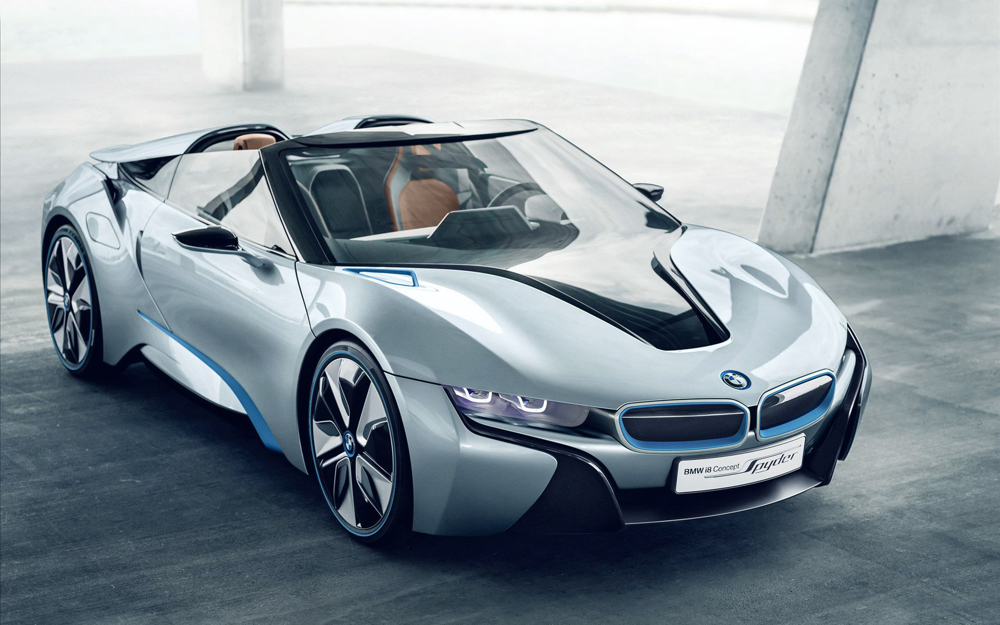

Car world
Bayerische Motoren Werke AG, commonly referred to as BMW, is a German multinational company which produces luxury vehicles and motorcycles. The company was founded in 1916 as a manufacturer of aircraft engines, which it produced from 1917 until 1918 and again from 1933 to 1945

Automobiles are marketed under the brands BMW, Mini and Rolls-Royce, and motorcycles are marketed under the brand BMW Motorrad. In 2015, BMW was the world's twelfth-largest producer of motor vehicles, with 2,279,503 vehicles produced.[2] The company has significant motorsport history, especially in touring cars, Formula 1, sports cars and the Isle of Man TT.
Important history
BMW is headquartered in Munich and produces motor vehicles in Germany, Brazil, China, India, South Africa, the United Kingdom, the United States and Mexico. The Quandt family are long-term shareholders of the company (with the remaining shares owned by public float), following brothers Herbert Quandt and Harald Quandt's investments in 1959 which saved the company from bankruptcy.